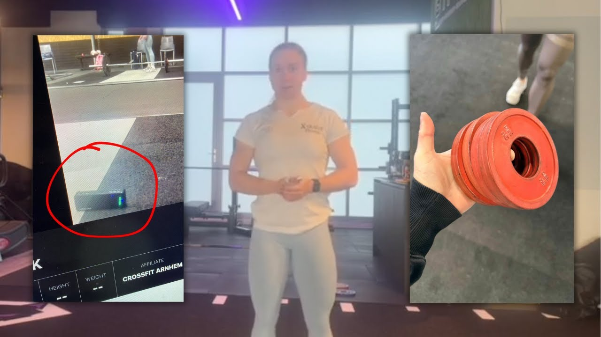
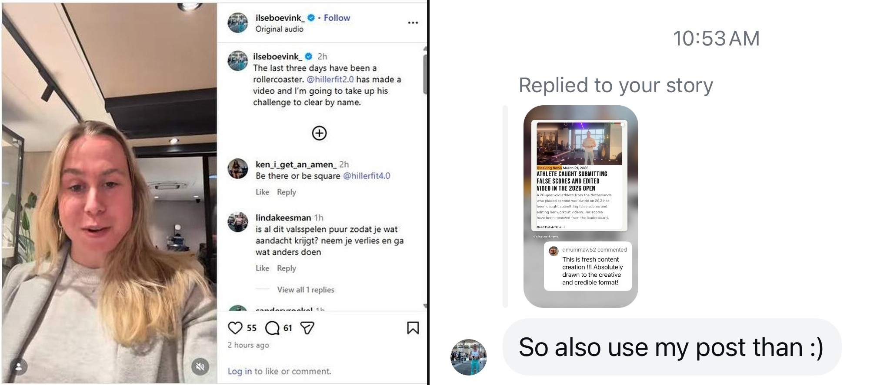
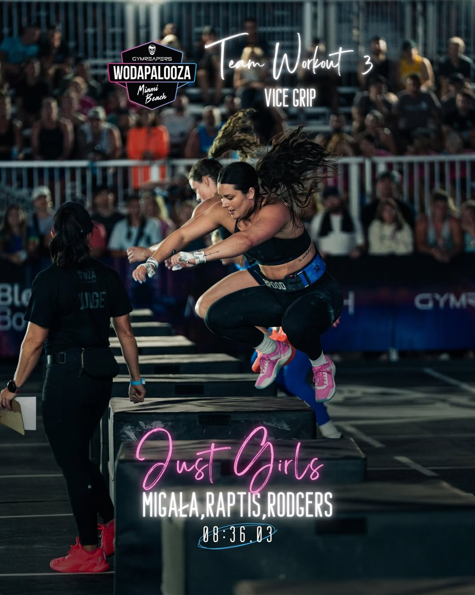
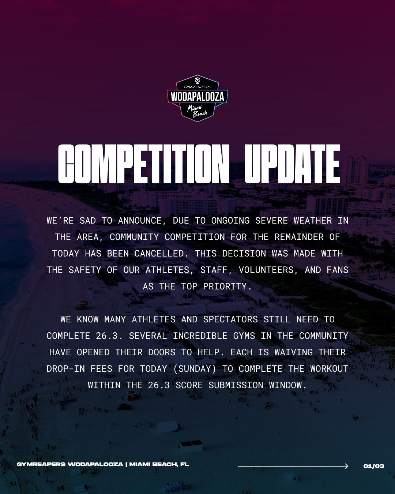
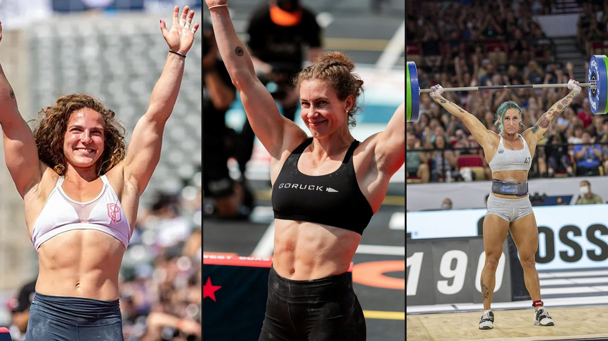
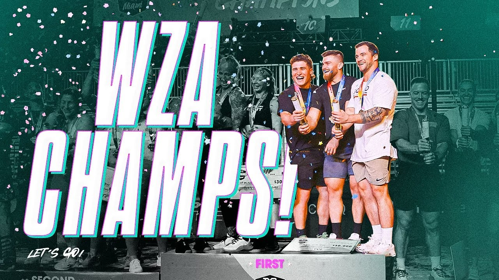
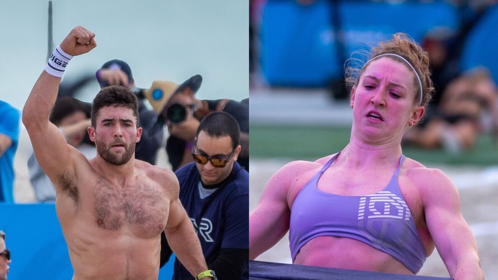
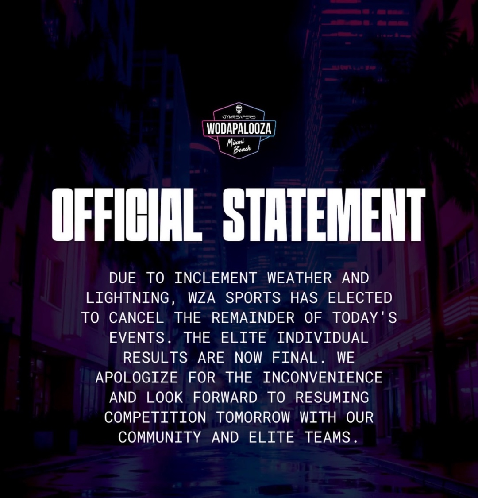
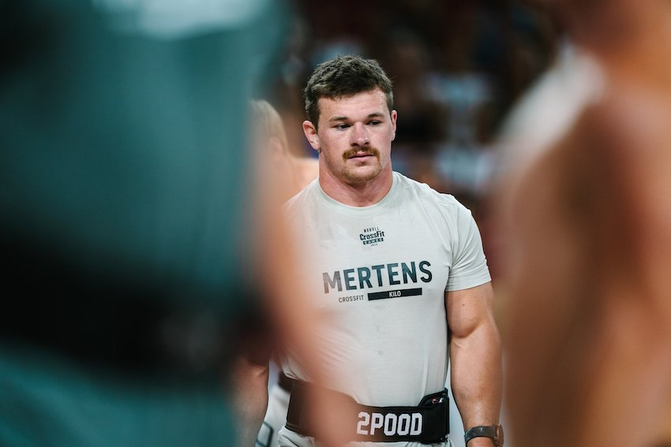
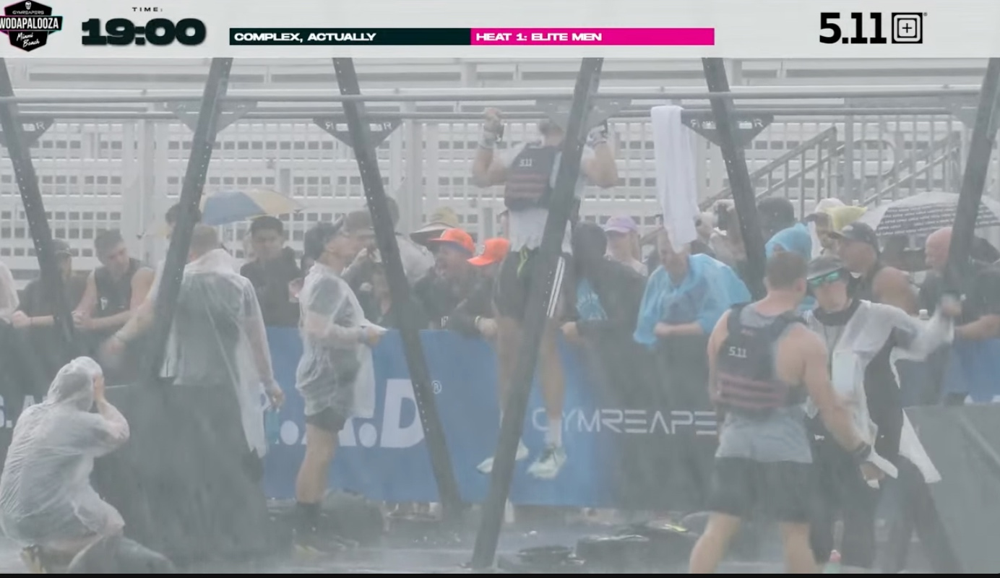

Top Stories

The Cheater Finally Admits It
Ilse Boevink has admitted to cheating on a live stream hosted by Andrew Hiller titled “The Final Chapter.” The 64 minute broadcast, which drew over 4,500 viewers within its first hour, featured the 20 year old Dutch athlete appearing on camera alongside Hiller to address the allegations that have consumed the CrossFit community over the past week.
During the stream, Boevink admitted to speeding up her second video, the redo of Open workout 26.3 that was supposed to prove she did not cheat. However, according to viewers and commenters, she did not take responsibility for everything. She did not admit to using a training bar instead of the required 15kg barbell, using undersized plates, filming 26.2 outside her affiliate, or using the wrong weight wall ball on 26.1.
The community response was immediate and largely skeptical. One commenter, @bradycastillo3917, captured the frustration. “We wanted to forgive after the first video. Then she doubled down. After the second video, we wanted to forgive. After Hiller proved it, we said just admit it, no biggy. Then she challenged Hiller and completely avoided any responsibility. Only when her feet were held to the fire did she apologize. She cheated. Multiple times. She gave the finger to the community 4 times in 2 weeks.”
Others were more supportive. @kevincrandall6668 wrote that she is a “good person who made a bad decision” and that it “took some guts admitting to it.” @SychJess added, “I hope she comes back harder than ever before and can one day laugh in disbelief she ever did that.”
Boevink’s coach also weighed in during the stream, claiming he had no idea any of this was happening because he was on a retreat. He excused her repeated lies and video fabrications, and praised her for eventually coming clean. The response did little to satisfy critics who pointed out that multiple fabricated videos across three workouts is not a single lapse in judgment.
The stream marks the conclusion of what the community has dubbed Hiller’s “cheater trilogy.” His previous video, “The (Next) Biggest Cheater in CrossFit History,” has now surpassed 98,000 views. Boevink’s scores have already been removed from CrossFit.com and her 2026 Open season is over.
The bigger question now facing CrossFit is whether admitted cheaters should receive a formal ban from competition. Boevink’s scores were removed, but she has not been banned. She could theoretically return next season. CrossFit has historically banned athletes caught using performance enhancing drugs, but there is no clear public policy on how they will handle this specific situation. Should an athlete who cheats across multiple workouts be allowed to compete again next year?
Source: Andrew Hiller YouTube

Caught Cheating, Still Chasing Clout
Ilse Boevink, the 20 year old Dutch athlete already caught submitting falsified CrossFit Open scores and edited workout footage, is back in the spotlight. Rather than stepping away quietly after being exposed not once but twice, Boevink posted a video to her Instagram challenging Andrew Hiller to fly to London and work out with her live. In the post she wrote, “The last three days have been a rollercoaster. @hillerfit2.0 has made a video and I’m going to take up his challenge to clear my name.”
The move has been widely viewed as an attempt to deflect from the evidence against her and turn the situation into a publicity stunt. Hiller himself responded in the comments. “How would me doing the workout help the situation? I’ve done it. It’s up. I got 217 reps. The live redo was supposed to prove you didn’t cheat. It didn’t.”
A large portion of comments on the post criticize the challenge itself. “This doesn’t address the issue,” one commenter wrote. Others echoed the sentiment. “Why not just admit it?” and “Workout invite does not equal proof you didn’t cheat.” The Instagram post, which drew 60 comments and 55 likes, became a wall of criticism from the CrossFit community.
User @tanhabouffe summed up the frustration. “Shifting the focus here to a faceoff to gain more publicity for yourself is sad. You cheated. You were given a chance to prove everyone wrong and you cheated again. Not only did you cheat, but you cheated on a crazy level and you want people to feel sorry for you. Stop.” Dutch commenters piled on as well, with @lindakeesman writing, “Is all this cheating just to get some attention? Take your loss and go do something else.”
@coffeepodsandwods commented, “Anyone who objectively views the video can see it’s been altered.” Another user, @jadehensen_, pointed out, “Different angle, different location, different people, DIFFERENT WEIGHTS.” Even @kippingitrealcrossfit, a verified CrossFit channel, chimed in with a blunt “I want to see it live.”
Meanwhile, Hiller’s original video, “The (Next) Biggest Cheater in CrossFit History,” has racked up over 36,000 views and 1,000 likes in under 24 hours. The YouTube comment section is equally merciless. @edwardpayne8962 wrote, “The amount of effort in cheating could have been spent getting fitter.” @lukebonnett3544 asked, “Why do these people insist on cheating these things knowing it cannot possibly go anywhere successfully?”
Others praised Hiller’s detective work. @J_Wolfe86 commented, “Only Andrew Hiller could do this kind of detective work. And people say we don’t need him.” @jessialbin795 added, “Great work Andrew. Felt like I was watching Dateline.” One of the most-liked YouTube comments came from @Coach.BayCarl. “I appreciate how even when you’re near dead certain they’re lying, you give the person a fair opportunity.”
There is more to the story that raises questions. Boevink completed every Open workout scaled in 2024. One year later, she somehow finished 1,416th overall. Her Instagram page has no training history before 2025. No progress videos, no PR celebrations, no workout logs. For an athlete to make that kind of leap in 12 months with zero public training footprint is, at best, highly unusual.
It doesn’t stop there. Boevink also reached out directly to the CF Network News Instagram account. After seeing our story covering Andrew Hiller’s video of her cheating scandal, she replied to it with, “So also use my post than :)”. She was requesting that we share her content alongside the coverage of her own dishonesty. Let that sink in. An athlete who has been caught cheating twice, whose scores have been removed, who fabricated video evidence and doubled down when confronted. She is now personally messaging media outlets asking them to amplify her content. It is a move that confirms what many in the community already suspected. This was never about clearing her name. It’s about clicks, views, and attention. She is willing to destroy her own reputation and further highlight her complete lack of integrity just to stay in the spotlight.
The community consensus is clear. Inviting someone to a workout is not the same as proving you didn’t cheat. The edited footage, the wrong equipment, the sped-up redo. None of that goes away because of a social media challenge. As @ainokea4u put it on YouTube. “Liars gonna lie and cheaters gonna cheat, but the internet is undefeated.”

Athlete Caught Submitting False Scores and Edited Video in the 2026 Open
Ilse Boevink, a 20 year old athlete from the Netherlands, placed second worldwide on 26.3 before Andrew Hiller exposed evidence that her submitted videos were fabricated. Her scores have since been removed from CrossFit.com.
Hiller's investigation found multiple red flags across all three Open workouts. On 26.3, her original video was filmed in 480p despite owning an iPhone Pro capable of 4K. The barbell appeared to be a 10kg training bar rather than the required 15kg, based on the drop sound, a single knurl mark, and undersized plates. The video also showed signs of splicing with brightness changes indicating editing.
On 26.2, Boevink completed the workout outside her affiliate in a personal gym with a time of 9:28, far faster than her affiliate attempts of around 12 minutes. Rules require workouts to be completed at a CrossFit affiliate in good standing. Her 26.1 wall ball video showed a ball marked "10" rather than the required 14 lbs for women.
When confronted, Boevink agreed to redo 26.3 on video. Hiller's analysis of the redo revealed the timer was running at normal speed while the athlete footage was accelerated to roughly 110 to 115%. He demonstrated how the editing was done using layered video with a masked clock overlay. The judge's movements appeared erratic and unnatural in the sped-up footage.
Throughout multiple conversations, Boevink denied any editing, claiming she started her timer late and that lighting changes explained the visual inconsistencies. One commenter noted that in 2024 she completed all Open workouts scaled, then in 2025 suddenly performed all workouts Rx at a near-elite level. Her score has been zeroed and her season is over.
Source: Andrew Hiller YouTube

Quarterfinals: What You Need to Know
The top 25% of Individual and Age-Group athletes worldwide will advance from the 2026 CrossFit Open to the Quarterfinals. Invitations, workouts, and registration open Monday, March 23 at 12 p.m. PT. Both Individual and Age Group Quarterfinals run March 27–31.
Athletes qualifying for both Individual and Age-Group divisions pay once, register twice, and complete one set of workouts. All scores must be submitted by Monday, March 30 at 12 p.m. PT, with score validation closing Wednesday, April 1 at 5 p.m. PT.
During Quarterfinals, cash prizes will be awarded to the top individual men and women performers on the worldwide leaderboard. All prizes are paid in U.S. dollars. First place takes home $5,000, followed by $4,000 for second, $3,000 for third, $2,000 for fourth, and $1,000 for fifth. Following the close of competition on Monday, March 30 at 12 p.m. PT, CrossFit will request videos from top performances to review. The review process will be primarily used for prize money purposes. In order to claim prize money, athletes must submit a video of the workout to CrossFit before the announced deadline.
To submit a valid score, athletes must use a registered judge who has passed the 2026 Judges Course or holds a current Advanced Judges Course. Workouts must be completed at a CrossFit affiliate in good standing, and athletes must receive affiliate manager validation while following all workout standards and movement requirements.
Video submissions are required and must show weights, measurements, and setup. Videos must be unedited, include a visible running clock or timer, and be uploaded to YouTube with a public link. Best practices include positioning the camera at least three feet off the ground, having the athlete face the camera, and ensuring the judge does not block the view.
CrossFit will announce when each leaderboard is final. Both the Individual and Age-Group leaderboards will be set no later than April 10, 2026. Athletes can check their qualification status by searching their affiliate name on the CrossFit Games website. For upload issues, submit scores first and contact support@crossfitgames.com before the deadline.

CrossFit Media Leaderboard
We ranked the top CrossFit media personalities by their performance in the 2026 CrossFit Open using the rank-point scoring system.
Top 10: JR Howell of CrossFit Crash holds the #1 spot with an overall score of 326. Wajma Poosie comes in at #2 with an estimated score of 620 (not officially registered). Jamie Latimer of Clydesdale Media checks in at #3 with a score of 812. Ben Davidson is #4 with a score of 995. Rounding out the top 10: James Hobart (#5), Scott Vandersloot (#6), Bryson Delmonte (#7), Claire Bays (#8), Sean McAvinue (#9), and Chase Ingraham (#10).
Depth of Field: Beyond the top 10, the media leaderboard features Grant Hooper, Seth Page, Lauren Kalil, Caleb Beaver, Dallas Hamm, Sevan Matossian, Brian Spin, Peter White, Jason Ackerman, Bill Grundler, and Scott Switzer—all registered and competing in the 2026 Open.
Not Registered: Brian Friend, Maysa Hannawi, and Rory McKernan are notably absent from the Open leaderboard as none registered for the 2026 season.
Serving Bans: Andrew Hiller and Taylor Self are currently serving competition bans and are ineligible to participate in the 2026 Open.

The Fittest Coaches in CrossFit
Everyone always talks about the athletes, but we wanted to know who the fittest coaches are in the space.
Workout 26.1 (Sprint/Capacity Bias): Jordan Adcock – 1,114 | Tim Paulson – 941 | Angelo DiCicco – 5,209. Adcock and Paulson—both seasoned Games-level athletes—show the value of engine-first programming, something heavily emphasized in camps like PRVN Fitness and Mayhem Athlete.
Workout 26.2 (Skill / Efficiency Separator): Angelo DiCicco – 64 | Jordan Adcock – 387 | Tim Paulson – 2,477. This workout flipped the leaderboard. DiCicco’s dominant finish highlights the importance of movement efficiency and high volume gymnastics training.
Workout 26.3 (Grinder / High Volume): Angelo DiCicco – 212 | Jordan Adcock – 564 | Tim Paulson – 567. Again, DiCicco proves consistency across modalities—arguably the most “coach-proof” test of fitness.
Overall Standings: Jordan Adcock – 416 | Tim Paulson – 846 | Angelo DiCicco – 1,190. While DiCicco won two workouts, Adcock & Paulson’s consistency ultimately secured them the top overall ranks—mirroring how Games scoring rewards well-roundedness.
What This Says About the Coaching Landscape: CrossFit Mayhem remains the gold standard for volume and depth, consistently sending large contingents to the CrossFit Games with the PRVN camp steadily on their heels, having more top 10 athletes in the elite individual field and likely to surpass them this year in the number of overall athletes being sent to the CrossFit Games.
Non-Registered Athlete — Wajma Poosie: One coach who didn’t officially register for the Open still put up numbers worth talking about. Using the CrossFit Open’s rank-point system—where your overall score is the sum of your individual workout ranks (lower is better)—Poosie’s estimated results: 26.1 Rank ~793rd | 26.2 Rank 15th | 26.3 Rank ~2,126th | Estimated Total Points ~2,934 | Estimated Overall Rank ~620th worldwide. That places Poosie approximately 620th overall worldwide in the Men’s division out of 127,000+ competitors—putting him in the top 0.5% of all male Open athletes.
So… Who Are the Fittest Coaches? On the women’s side, Jordan Adcock is the fittest female coach in this field. Not because she won the most events—but because she never fell off. As a former Individual Semifinalist, four-time CrossFit Games team athlete, and current coach at PRVN Fitness, Adcock’s 2026 Open performance proves she doesn’t just develop elite athletes—she is one.
On the men’s side, Tim Paulson officially takes the top spot among registered coaches with an overall rank of 846. A 7x CrossFit Games athlete and PRVN coach, Paulson’s well-rounded performance across all three workouts earned him the title. However, it’s worth noting that Wajma Poosie—who didn’t officially register—would have ranked significantly higher at ~620th overall, making him arguably the fitter coach on paper. That’s the defining trait of elite coaching today: building athletes (and themselves) who can survive every test.
Final Standings — Women
| # | Athlete | Country | Pts | 26.1 | 26.2 | 26.3 |
|---|---|---|---|---|---|---|
| 1 | Lucy Campbell | GBR | 17 | 2nd (10:34) | 4th (6:50) | 11th (14:29) |
| 2 | Mirjam Von Rohr | CHE | 19 | 1st (9:50) | 15th (7:15) | 3rd (13:35) |
| 3 | Leah Støren | NOR | 49 | 14th (11:19) | 22nd (7:32) | 13th (14:40) |
| 4 | Emma Lawson | CAN | 52 | 29th (11:33) | 13th (7:02) | 10th (14:19) |
| 5 | Morgane Thyssens | BEL | 65 | 21st (11:28) | 29th (7:38) | 15th (14:45) |
Source: CrossFit Games Open Leaderboard (games.crossfit.com)

WZA Elite Teams Finish 26.3 at CrossFit Miami Beach — Just Girls Take the Lead
After the outdoor cancellation, remaining Elite Teams completed 26.3 at CrossFit Miami Beach. Just Girls (Raptis, Migala, Rodgers) won the event and took the women’s lead with 354 points. Team GoWod extended their men’s lead to 370 points. Full details below.

WZA Officially Cancels Remaining Competition Due to Severe Weather
Wodapalooza officially cancelled all remaining outdoor competition due to severe weather. Elite Teams were later relocated to CrossFit Miami Beach to complete 26.3. Results for community divisions are final.

Final Elite Teams Standings — Updated After 26.3
The Elite Teams division is complete after four events. Just Girls lead women’s with 354 points, Yeti Girls second at 350. Team GoWod wins men’s with 370 points, The Boys second at 342. Full leaderboard tables below.

WZA Day 3: Elite Teams Take the Floor in Miami
Day 3 of Gymreapers Wodapalooza shifts the spotlight to the Elite Teams of Three, where strategy and synchronization become just as important as individual fitness. After the individual competition wraps up, some of the biggest names in CrossFit are teaming up for one of the weekend’s most anticipated divisions — and the weather forecast looks much better after storms disrupted earlier competition days.
On the men’s side, Team GoWod featuring Justin Medeiros, Dallin Pepper, and Jayson Hopper is one of the most anticipated lineups of the weekend. Also drawing attention is Team RX Smart Gear with Saxon Panchik, Jorge Fernandez, and Guilherme Malheiros.
The women’s field features several powerhouse squads. Yeti Girls, built around big personalities and Games athletes, includes Danielle Brandon, Emily Rolfe, and Alex Gazan. Mayhem Platinum brings Lindsey Lane, Jessica Androsik, and Kensie Campbell out of CrossFit Mayhem. Another strong contender is Just Girls with Gabriela Migala, Alexis Raptis, and Paige Rodgers.
The team competition has also picked up a compelling storyline thanks to a last-minute roster change involving Andrew Hiller. Hiller helped assemble a women’s team featuring Trista Smith, Liz Wishart, and Sydney Smith, even flying Wishart to Miami shortly before the event so the trio could compete. However, the situation took an unexpected turn when Hiller left the event after controversy surrounding his all-access media credentials being denied during the CrossFit Open workout announcement. Despite the off-floor drama, the newly formed team remains one of the more intriguing storylines in the elite team field.
With Miami’s oceanfront backdrop, loud crowds, and a packed competition floor, Gymreapers Wodapalooza continues to deliver one of the most exciting spectacles in the sport.
 Breaking
Breaking
Chief Peoples Officer Out?
Andrew Hiller posted a photo of Annette Reavis, CrossFit’s Chief Peoples Officer, to his Instagram account with the single-word caption “Hope.” The post, liked by Matthew Souza among others, has generated significant speculation about Reavis’s future with the company.
After Don Faul announced his immediate departure on March 3rd — telling his team his final day would be Friday, March 6th — the CF Network was live with Sevan Matossian, Matthew Souza, Peter White, and Jenny Hull to discuss the CEO stepping down. During the show, they questioned whether Annette Reavis, who has been widely regarded as Don Faul’s right hand at CrossFit, would remain on staff. Hiller’s post all but suggests this is the case. Adding fuel to the speculation, Daniel Chaffey commented on Hiller’s post: “Today the team of CrossFit is the best it has been for years.”
Reports are coming in that she has been removed from Slack, the program the company uses for internal communications amongst their team members. We will update you with more information as it becomes available.
Source: Andrew Hiller Instagram (@hillerfit2.0)

BreakingJames Sprague & Lucy Campbell Win Wodapalooza — Back-to-Back Champions
James Sprague and Lucy Campbell are the 2026 Gymreapers Wodapalooza Miami Beach champions, each winning the event for the second consecutive year. Sprague dominated the men’s field with 364 points across four events after the fifth and final men’s event was cancelled due to weather. Campbell finished with 354 points after five completed events on the women’s side.
The women’s final event — Press & Impress — went off as rain began rolling in, making the competition floor slick. In the first heat, Dani Speegle won and slid across the wet floor into the finish line. In the final heat, Lucy Campbell won with a time of 6:32.06 and also intentionally slid into the finish, capping off her dominant weekend. Andra Moistus finished second overall with 338 points after placing 3rd in Press & Impress (7:10.45), while Arielle Loewen rounded out the podium at 324 points with a 4th-place finish (7:44.50).
On the men’s side, Sprague’s 364 points put him 82 points clear of second-place Ty Jenkins (282). Austin Hatfield finished third with 254 points, just 2 points ahead of Jonne Koski (252). The men’s final event was cancelled due to inclement weather and lightning, making the standings after four events the official final results.
Source: Competition Corner

BreakingWZA Cancels Remaining Elite Events Due to Lightning — Individual Results Are Final
Gymreapers Wodapalooza Miami Beach has officially cancelled the remaining elite men’s final event due to inclement weather and lightning. The elite women completed their final event — Press & Impress — before the cancellation, making their results official after five events. The elite men’s results are now final after four completed events, with the fifth and final event unable to take place.
WZA Sports released an official statement apologizing for the inconvenience and confirming that competition will resume tomorrow with community and elite team events.
Source: WZA Sports Official Statement

BreakingColten Mertens Finishes 26.3 in 13:45 — Sets the World Record to Beat
Colten Mertens setting a world record time to beat of 13:45 on CrossFit Open workout 26.3. The full workout was streamed live on the CF Network YouTube channel with special guest Dave Castro.
During the show, a viewer asked Castro whether he would be programming next year — notably asking about the programming role specifically, not the CEO position. Castro responded: if he is CEO, he will not be programming next year.
Source: CF Network YouTube

Breaking
The 2026 Open
Is Here
Kerstetter wins 26.3 live at WZA Miami Beach. Moistus takes WZA Elite Event 1 — no men finish. WZA Day 1 is underway. Games tickets go on sale next week. The road to the 20th Games in San Jose continues.